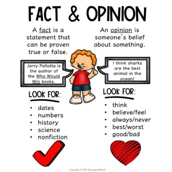
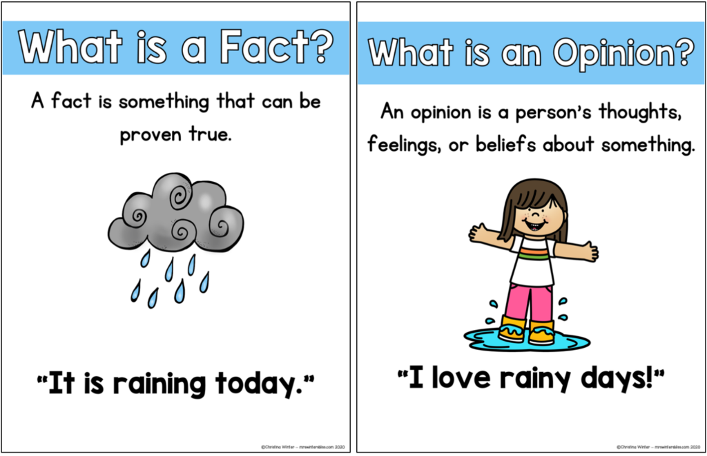

🏺 Week 21 of 35 — Unit 4: Our Past and Present
Unit 4: Our Past and Present | Dates: Feb 7 – Feb 11, 2027 | Week: 6 of 6 | Year week: 21 of 35 |
Class | Sunday | Monday | Tuesday | Wednesday | Thursday |
This week's updates / notes: | WIDA Reading Test National Sport Day — No School Awsaj Sports Day Activities Remind students about trip on Sunday | ||||
Morning Meeting | Week #15 SEL Lesson - Click Here. Objective for this week is: Working Together 5A- Individual Activity to Whole Group Meeting 5B- One to One Enrichment 5C- Morning Practice | Week #15 SEL Lesson - Click Here. Objective for this week is: Working Together 5A- Individual Activity to Whole Group Meeting 5B- One to One Enrichment 5C- Morning Practice | Week #15 SEL Lesson - Click Here. Objective for this week is: Working Together 5A- Individual Activity to Whole Group Meeting 5B- One to One Enrichment 5C- Morning Practice | Week #15 SEL Lesson - Click Here. Objective for this week is: Working Together 5A- Individual Activity to Whole Group Meeting 5B- One to One Enrichment 5C- Morning Practice | |
Vocabulary & Spelling — Word of the Day (G5 + G3) Routine: give the definition first (no guessing) → students share where they might use it, similar/different words. Morphology, examples/non-examples, synonyms/antonyms & more on the vocabulary cards: Vocabulary Padlet (incl. Spelling: words Mon · test Thu) | G5: derive — To obtain or receive something from a source or origin. G3: depict — To represent or show something through a picture, story, or description. Unit: frantically — In a wild, hurried way because of fear or worry. | G5: etymology — The study of the origin and history of words. G3: narrator — The person or character who tells a story. Unit: coherent — Logical, consistent, and forming a unified whole; easy to follow. ——— Spelling — introduce Week 21 lists (practice all week). Low (Building Spelling Skills, List 21): you, your, yes, yell, drop, line, side, dress, draw, saw High (Building Spelling Skills, List 21): enough, tougher, fifty, pharmacy, alphabet, nephew, trophy, paragraph, telephone, photograph, giraffe, forest, figure, refrigerator, draft, phrase, traffic, chief | G5: interpret — To explain the meaning of something or understand it in a particular way. G3: rhythm — A regular, repeated pattern of sounds or movements. Unit: evaluate — To judge or determine the significance, worth, or quality of something. | G5: literal — Taking words in their usual or most basic sense, without exaggeration or metaphor. G3: stanza — A group of lines in a poem, separated from other groups by a space. Unit: simultaneous — Happening or done at the same time. | G5: figurative — Using words in a way that is different from their usual meaning to create a special effect. G3: perform — To carry out an action, or to present entertainment before an audience. Unit: aspire — To direct one's hopes or ambitions toward achieving something great. Spelling test — Week 21 lists (Low: List 21 · High: List 21). |
READING | Guided Reading: POWTOON — Video Warm-up (3 minutes): Show a short BrainPOP video on fact and opinion. Ask: What is the difference between a fact and an opinion? (Quiz). Practice (10 minutes): Display/create Fact & Opinion Anchor Chart. Give examples of statements and ask students to thumbs up for facts and thumbs down for opinions. Pair work: Students write one fact and one opinion to share with a partner.   Rotations: SeeSaw — Fact and Opinion · Bats F/O Sort · Fact and Opinion Sort · Kangaroo Sort IXL: G2 F/O · G3 F/O · G4 F/O · G5 F/O Google Classroom/Worksheets: Resources/Worksheets · Worksheets for VOICE Boom Cards: Fact and Opinion Comp. G1 · Fact and Opinion Comp. RazKids, EPIC, Book Bag. Kahoot: Fact and Opinion | Guided Reading: Warm-up (3 minutes): Review the anchor chart from Day 1. Play Fact or Opinion? Game Practice (10 minutes): Read a short passage from a mentor text (e.g., Scholastic News, Time for Kids, or a Qatar history article). Highlight facts in blue and opinions in red (model first, then let students try). Partner work: Students read a new short passage and identify one fact and one opinion. | Guided Reading: Warm-up (3 minutes): Review the anchor chart from Day 1. Play Fact or Opinion? Move right or left Game Practice (10 minutes): Show two short commercials (one with facts, one with opinions): National Geographic Kids · video example. Ask: Which statements are facts? Which are opinions? Group activity: Students sort printed statements into "Fact" or "Opinion" categories. | Guided Reading: Warm-up (3 minutes): Quick review game: Fact or Opinion Lightning Round (Teacher says a sentence; students show "F" or "O"). Practice (10 minutes): Writing Prompt: Write a paragraph about your favorite food, including at least two facts and two opinions. Peer sharing: Students read a partner's work and underline the facts in blue and opinions in red. | |
Assessment | Reading — Exit Ticket: "One fact and one opinion about your favorite animal." Collect responses to check understanding. | Reading — Share one fact and one opinion with the class. Quick discussion: Why is it important to know the difference? | Reading — Discuss: Why do advertisements use opinions more than facts? Ticket Out the Door: Write one opinion an ad might use to sell a product. | Reading — Reflection: Why is it important to use both facts and opinions in writing? | |
Differentiation | Reading — Struggling learners: Provide sentence starters (e.g., "A fact about school is…"). Advanced learners: Challenge them to find two facts and two opinions in a short text. | Reading — Struggling learners: Provide a highlighted version with facts and opinions pre-marked for discussion. Advanced learners: Have them explain why an opinion might be persuasive or misleading. | Reading — Struggling learners: Provide pre-written statements and guide sorting. Advanced learners: Challenge them to write their own advertisement using both facts and opinions. | Reading — Struggling learners: Use sentence frames (e.g., "A fact about pizza is… An opinion about pizza is…"). Advanced learners: Challenge them to write persuasively, using opinions to support facts. | |
GRAMMAR (Sun & Tue) WRITING (Mon & Wed) Thu = catch-up IXL this week: Low: Compare pictures using comparative and superlative adjectives (G1) High: Use adjectives to compare (G3) · Use adverbs to compare (G3) Stretch: Spell adjectives that compare (G4) · Use adjectives with more and most (G5) | Grammar (Sun) — Comparative Adjectives OBJ: Form comparative and superlative adjective forms Packets — Low (K-1): K: Review: Capitalization, G1: L3.10 Comparative Adjectives · Mid (2-3): G2: L3.17 Comparative Adjectives, G3: L3.16 Comparative Adjectives, G3: Review: Comparative Adj./Adv. · High (4-6): G4: L3.14 Comparative Adjectives, G4: Review: Comparative Adj./Adv., G5: L3.3 Adjectives — Cute/Big/Light, G5: L3.4 Adjectives — More/Most/Good/Better/Best/Bad/Worse/Worst, G6: L3.2 Adjectives and Adverbs History: The western lands were drier. | Writing — Revise and polish grammar Reread the draft aloud against the co-built rubric; model fixing a run-on with a comma or semicolon and checking possessive apostrophes; students revise for clarity, then partner-check with the rubric. Grammar link: possessive apostrophes and semicolons. TWR: complete-sentence test, no grammar terms — WHO or WHAT is it about? WHAT HAPPENED? Fix missing answers; expand one thin fact sentence with when?/where?/why? (Low: teacher marks the sentence; High: also split one too-long sentence). Resources: BrainPOP Jr: Possessive Nouns IXL: Singular possessive (G1) — Plural and possessive errors (G3) — Stretch: G4 — Singular or plural possessive (G5) | Grammar (Tue) — Comparative Adverbs OBJ: Form comparative adverb forms; use good/well and bad/badly correctly Packets — Low (K-1): K: Review: Sentences, G1: L3.10 Comparative Adjectives (review; no G1 comparative adverbs) · Mid (2-3): G2: Review — Comparative Adjectives (no G2 comparative adverbs), G3: L3.17 Comparative Adverbs, G3: Review: Comparative Adj./Adv. · High (4-6): G4: L3.15 Comparative Adverbs, G4: Review: Comparative Adverbs, G5: L3.5 Adverbs — Bad/Badly/Good/Well/Very/Really, G6: L3.2 Adjectives and Adverbs Settlers traveled more slowly in winter. | Writing — Publish and present the report (EXIT TASK) Model a final proofread against the rubric; students publish a neat copy (Table of Contents, glossary, diagrams), then present to the class or a partner, naming their sources. Early finishers add a labeled diagram or map. TWR: open every presentation with the one-sentence summary of the whole report; Low/Med read from a sentence strip, High speak from key words. Resources: co-built rubric (final check) | Catch-up day — reteach or extend this week's grammar and writing; finish unfinished drafts; assign this week's IXL practice (links in the left column: Low = reteach, High = consolidate, Stretch = extension). |
MATH Pacing W20 · B7 Algebra W19–W22 | |||||
Differentiation | Each lesson includes opportunities for partner practice, common misperceptions, independent practice, and a challenge questions for differentiation. | Each lesson includes opportunities for partner practice, common misperceptions, independent practice, and a challenge questions for differentiation. | Each lesson includes opportunities for partner practice, common misperceptions, independent practice, and a challenge questions for differentiation. | Each lesson includes opportunities for partner practice, common misperceptions, independent practice, and a challenge questions for differentiation. | |
EXPLORER 3-day plan (Mon–Wed) Qatar Showcase (Exit Task) — Project/Exit week: the Hook→Review rhythm flexes. IXL this week: Low: Read a Map — Cardinal Directions (Gr 2, review) · High: Primary and Secondary Sources (Gr 4, review) Stretch: Read a Map: Cardinal Directions (Gr 5) · Timelines with BCE and CE (Gr 4) | Review / catch-up — revisit last week's Explorer learning; finish unfinished investigations or SeeSaw posts; preview this week's topic. | Mon · Plan & Build Plan & build your Qatar Showcase: finish the collage and assemble your then/now, oil-story and evidence displays. Co-plan with the rubric: Social Studies Rubric (Padlet · Unit 4 · stable link) Objective: Assemble the Qatar Showcase displays (collage, then/now, oil story, evidence) to tell how Qatar changed. Assessment: Point to one display and name one way Qatar changed. Differentiation: Point to a finished display with adult support / name one change with some support / assemble and explain all displays independently. | Tue · Finish & Rehearse Finish displays; rehearse explaining your ‘past → present’ story. | Wed · Qatar Showcase (Exit) Qatar Showcase (Exit Task): present to parents / another class. Reflection + Social Studies Assessment — Our Past and Present. Exit Task Exit Task — Qatar Showcase (public-facing) · done on the LAST WEDNESDAY of the unit Explorers build a ‘then & now’ Qatar Showcase — country collage, then/now displays, an oil-story cause-and-effect, and a ‘reading pictures’ evidence board — and present it to parents / another class. Assessment: ‘Social Studies Assessment — Our Past and Present (Historical Thinking)’ (Grade 5 Assessments padlet). Exit resources: Exit task (Padlet) · Social Studies Rubric (docx). | Review / catch-up — consolidate Mon–Wed learning; complete recordings/reflections; reteach or extend as needed. Celebrate the completed Exit Task. |